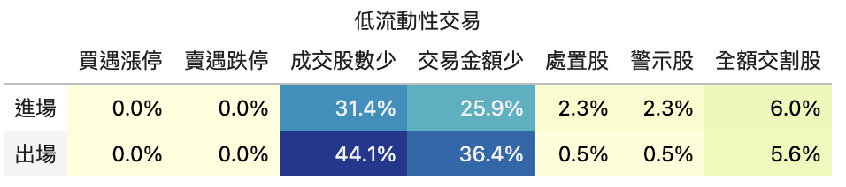

finlab.analysis
finlab.analysis.liquidityAnalysis.LiquidityAnalysis
Bases: Analysis
分析台股策略流動性風險項目的機率
Note
參考VIP限定文章更了解流動性檢測內容細節。
Args: required_volume (int): 要求進出場時的單日成交股數至少要多少？ required_turnover (int): 要求進出場時的單日成交金額至少要多少元？避免成交股數夠，但因低價股因素，造成胃納量仍無法符合資金需求。
Examples:

finlab.analysis.inequalityAnalysis.InequalityAnalysis
Bases: Analysis
Analyze return of trades with condition inequality
| PARAMETER | DESCRIPTION |
|---|---|
name
|
name of the condition
TYPE:
|
df
|
value used in condition. If df is None,
TYPE:
|
date_type
|
can be either
TYPE:
|
target
|
the target to optimize. Any column name in report.get_trades()
TYPE:
|
Examples:

finlab.analysis.periodStatsAnalysis.PeriodStatsAnalysis
Bases: Analysis
分析台股策略的不同時期與大盤指標作比較
Examples:
可以執行以下程式碼來產生分析結果：
產生的結果：
| benchmark | strategy | |
|---|---|---|
| ('overall_daily', 'calmar_ratio') | 0.149192 | 0.0655645 |
| ('overall_daily', 'sortino_ratio') | 0.677986 | 0.447837 |
| ('overall_daily', 'sharpe_ratio') | 0.532014 | 0.306351 |
| ('overall_daily', 'profit_factor') | 1.20022 | 1.07741 |
| ('overall_daily', 'tail_ratio') | 0.914881 | 0.987751 |
| ('overall_daily', 'return') | 0.0835801 | 0.0478957 |
| ('overall_daily', 'volatility') | 0.182167 | 0.312543 |
| ('overall_monthly', 'calmar_ratio') | 0.155321 | 0.0731378 |
| ('overall_monthly', 'sortino_ratio') | 0.697382 | 0.439003 |
| ('overall_monthly', 'sharpe_ratio') | 0.524943 | 0.307292 |
| ('overall_monthly', 'profit_factor') | 1.75714 | 1.27059 |
| ('overall_monthly', 'tail_ratio') | 1.03322 | 0.903335 |
| ('overall_monthly', 'return') | 0.0836545 | 0.0479377 |
| ('overall_monthly', 'volatility') | 0.186989 | 0.316178 |
| ('overall_yearly', 'calmar_ratio') | 0.436075 | 0.127784 |
| ('overall_yearly', 'sortino_ratio') | 0.738327 | 0.694786 |
| ('overall_yearly', 'sharpe_ratio') | 0.407324 | 0.350986 |
| ('overall_yearly', 'profit_factor') | 2.2 | 1.66667 |
| ('overall_yearly', 'tail_ratio') | 1.71647 | 1.359 |
| ('overall_yearly', 'return') | 0.0814469 | 0.0663674 |
| ('overall_yearly', 'volatility') | 0.284742 | 0.419087 |
假如希望開發交易分析系統，可以繼承 finlab.analysis.Analysis 來實做分析。
finlab.analysis.Analysis
Bases: ABC
analyze
Analyze trading report.
One could assume self.caluclate_trade_info will be executed before self.analyze,
so the report.get_trades() will contain the required trade info.
calculate_trade_info
Additional trade info can be calculated easily.
User could override this function if additional trade info is required for later anlaysis.
Examples:
from finlab.analysis import Analysis
class SomeAnalysis(Analysis):
def calculate_trade_info(self, report):
return [
['股價淨值比', data.get('price_earning_ratio:股價淨值比'), 'entry_sig_date']
]
report.run_analysis(SomeAnalysis())
trades = report.get_trades()
assert '股價淨值比@entry_sig_date' in trades.columns
print(trades)
display
Display result
When implement this function, returning Plotly figure instance is recommended.